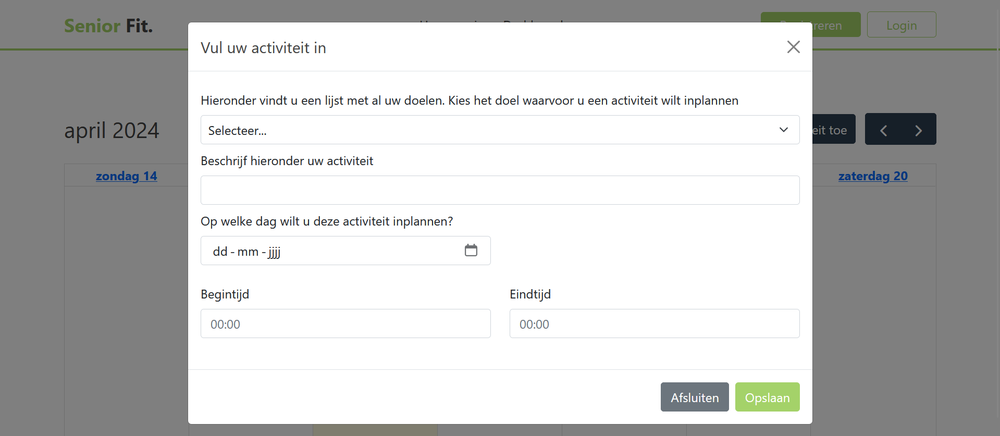

Senior Fit.
HTML | JavaScript | MySQL
Digital Life is a research group at the University of Applied Sciences of Amsterdam. They focus on innovative technologies, sensors, and digital information in everyday life. They conduct applied research on technology, data, and design methods with a focus on the human element. The Amsterdam region serves as their 'Living Lab' for this purpose.
The research project SO-NUTS focuses on preventing unhealthy weight gain and obesity during crucial phases throughout life. Older individuals are at risk of gaining weight and losing muscle mass during the transition from work to retirement. There is an even greater risk of overweight and sarcopenia due to hormonal changes, status, poor nutritional intake, and lower levels of physical activity. However, retirement offers a great opportunity and possibility to improve lifestyle, as older adults already have to restructure their daily activities.
We were assigned to create a web application that provides insight into the user's movement and dietary patterns. The application should offer personalized and targeted advice on nutrition and exercise after completing a questionnaire. It should encourage users to eat healthier and exercise more. For this project, we utilized the Agile development methodology, Scrum.
The product
We developed a web application featuring a survey for users. Upon completion of the survey, users received recommendations on exercises to improve their health. After selecting the exercises, users can schedule time to work on them using the calendar accessible from the dashboard. On the dashboard, users could track their time spent on the exercises, as well as view their personal data and log changes, for example, their body weight.
My task within this project was to generate the recommendations and create a calendar for users to schedule appointments. For the calendar, we used the FullCalendar.io library. It displayed appointments the user could create using a form.
What I learned:
-
I got familiar with JavaScript, a language that wasn't one of my strongest skills. I was able to create some nice functionalities and explore more of what JavaScript has to offer.
-
I learned how to using the Scrum method. Becoming the Scrum Master during the second sprint and Product Owner during the fourth sprint.
-
I was able te address issues with my teammates rather than keeping my concerns to myself. It took me a lot of courage, but after some time I gained the confidence to speak up about challenges and work together with my team member towards finding solutions.